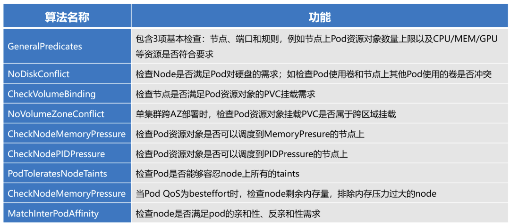
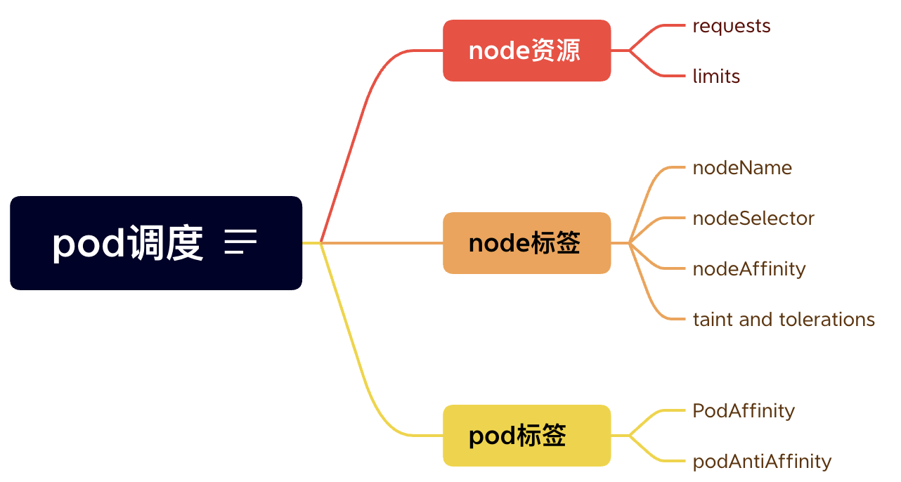

k8s pod调度配置
文章目录
本文介绍k8s pod 调度的基本原理，详细介绍具体pod调度相关的配置。
kube-scheduler
kube-scheduler作为k8s负责任务调度的组件，以pod的形式运行在master节点上，主要职责是为pod选出合适的node进行调度，其调度过程可以简化为如下两步：
- 使用Predicate算法筛选出合适的node，避免资源冲突、节点超载、端口的冲突等
- 使用Priority算法为每个node打分，得分最高的node填入pod对象字段（
pod.spec.nodeName）
Predicate算法：

Priority算法：

从kube-scheduler调度流程可以看出，node的资源、标签、taint和pod的affinity、标签对调度结果起到调节作用，如下图所示。接下来通过例子详细介绍这些配置。
pod调度配置
pod调度指将pod调度到合适的node。
kube-scheduler默认会根据node资源情况进行筛选，挑出符合条件的node。我们还可以通过设置亲和性自定义复杂的调度策略，本质上还是通过node和pod的标签进行筛选和调度。pod是最小调度单位，所有跟调度和资源管理相关属性都属于pod对象字段，汇总如下：
pod.spec.
-
nodeSelectormap[string]string -
nodeNamestring -
tolerations[]Object -
priorityClassNamestring
pod.spec.affinity.
nodeAffinityObjectpodAffinityObjectpodAntiAffinityObject
pod.spec.containers.
resourcesObject
node资源
通过node上的计算资源来限定pod的调度。
resources
resources.
requestsmap[string]stringlimitsmap[string]string
k8s在调度时，按照requests值进行计算，配置Cgroups时按照limits值设置。
由于大多数应用使用的资源要小于时间使用的资源，所以requests设置较小的值，让pod可以顺利调度到node，设置Cgroups时取一个可能使用到的值。即requests<=limits。
不同的requests和limits会影响到pod的QOS级别。
QOS
QOS定义pod的服务质量，当node资源紧张时，kubelet根据QOS等级来调度和驱逐pod
根据pod.spec.resources设置，pod.status.qosClass被指定如下等级：
Guaranteed配置了requests和limits，且requests=limitsBurstable不满足Guaranteed，但至少配置一个requestsBestEffort没配置requests和limits
驱逐优先级：BestEffort → Burstable → Guaranteed
cpuset可以把容器绑定到某个cpu核心上从而减少cpu上下文切换次数，默认为cpushare。
配置cpuset：
- 必须是
Guaranteedpod - pod的
requests.CPU=limists.CPU
如下：
|
|
node标签
nodeName
pod.spec.nodeName string
nodeName 是比亲和性或者 nodeSelector 更为直接的形式。nodeName 是 Pod 规约中的一个字段。如果 nodeName 字段不为空，调度器会忽略该 Pod， 而指定节点上的 kubelet 会尝试将 Pod 放到该节点上。 使用 nodeName 规则的优先级会高于使用 nodeSelector 或亲和性与非亲和性的规则。
|
|
nodeSelector
pod.spec.nodeSelector map[string]string
通过node标签筛选
|
|
污点和容忍度
node的taint和pod的tolerations相互配合，可以完成很多负载调度工作
一个节点可以有多个污点，而 pod 可以有多个容忍度。Kubernetes 处理多个 taints 和 toleration 的方式就像一个过滤器：从节点的所有 taint 开始，然后忽略 pod 具有匹配 toleration 的那些；剩余的未被忽略的污点对 pod 有特定的影响。
为node打上污点：
kubectl taint nodes <node_name> key=value:effect
<taintKey>=<taintValue>:<taintEffect>
|
|
可以分配三个不同的值effect：
- NoSchedule：如果至少有一个未被忽略的污点NoSchedule生效，那么 Kubernetes 不会将 pod 调度到该节点上。已经存在的不容忍这种污点的 Pod 不会被从该节点驱逐或删除。但是除非有匹配的容忍度，否则不会在这个节点上安排更多的 Pod。这是一个硬约束。
- PreferNoSchedule：如果至少有一个不可容忍的污点有影响，Kubernetes 将尝试不在节点上调度 Pod 。但是如果有一个 pod 可以容忍一个 taint，它可以被调度。这是一个软约束。
- NoExecute：如果至少有一个未被忽略的NoExecute taint 生效，那么 Pod 将从节点中被逐出（如果它已经在节点上运行），并且不会被调度到节点上（如果它还没有在节点上运行）节点）。这是一个强约束。
配置tolerations：
pod.spec.tolerations Object
|
|
nodeAffinity
pod.spec.affinity.
-
nodeAffinity节点亲和性
-
requiredDuringSchedulingIgnoredDuringExecutionObject指定规则（node的label）
nodeSelectorTermsmatchExpressions[]ObjectmatchFields[]Object
-
preferredDuringSchedulingIgnoredDuringExecution[]Object根据权重，优先调度（node的label）
-
preferencematchExpressions[]ObjectmatchFields[]Object
-
weight1-100
-
运算符包括
In、NotIn、Exists、DoesNotExist、Gt、Lt例子：
1 2 3 4 5 6 7 8 9 10 11 12 13 14 15 16 17 18 19 20 21 22 23 24 25 26 27 28 29 30 31 32 33 34 35 36 37 38 39 40 41 42 43 44 45 46 47 48 49 50 51 52 53 54 55 56 57 58 59 60 61 62 63 64 65 66 67 68 69 70 71 72 73 74# pod 只会被调度到具有 disktype=ssd 标签的节点上 apiVersion: v1 kind: Pod metadata: name: nginx spec: affinity: nodeAffinity: requiredDuringSchedulingIgnoredDuringExecution: nodeSelectorTerms: - matchExpressions: # disktype=ssd - key: disktype operator: In values: - ssd containers: - name: nginx image: nginx imagePullPolicy: IfNotPresent --- # pod 将首选调度到具有 disktype=ssd 标签的节点 apiVersion: v1 kind: Pod metadata: name: nginx spec: affinity: nodeAffinity: preferredDuringSchedulingIgnoredDuringExecution: - weight: 1 preference: matchExpressions: # disktype=ssd - key: disktype operator: In values: - ssd containers: - name: nginx image: nginx imagePullPolicy: IfNotPresent --- # 节点必须满足os=linux，再根据权重排序 apiVersion: v1 kind: Pod metadata: name: with-affinity-anti-affinity spec: affinity: nodeAffinity: requiredDuringSchedulingIgnoredDuringExecution: nodeSelectorTerms: - matchExpressions: # os=linux - key: kubernetes.io/os operator: In values: - linux preferredDuringSchedulingIgnoredDuringExecution: - weight: 1 preference: matchExpressions: # lable-1=key-1 - key: label-1 operator: In values: - key-1 - weight: 50 preference: matchExpressions: # label-2=key-2 - key: label-2 operator: In values: - key-2 containers: - name: with-node-affinity image: k8s.gcr.io/pause:2.0 -
pod标签
podAffinity podAntiAffinity
pod间亲和性 pod反亲和性最佳实践之一是通过将 Pod 分布在不同的可用区来避免单点故障 配合Deployment和StatefulSet使用 Pod 间亲和性与反亲和性使你可以基于已经在节点上运行的 Pod 的标签来约束 Pod 可以调度到的节点，而不是基于节点上的标签。
pod.spec.affinity.
-
podAffinitypodAntiAffinity-
requiredDuringSchedulingIgnoredDuringExecution[]Object-
labelSelectorObject pod标签选择器 -
namespaceSelectorObject namespace标签选择器 -
namespaces[]string namespace name list -
topologyKeystringpod affinity的调度范围为topology，topologyKey用来定义pod affinity同一位置的含义，如果为hostname，即同一位置为同一node
-
-
preferredDuringSchedulingIgnoredDuringExecution[]Object-
podAffinityTermObjectlabelSelectorObjectnamespaceSelectorObjectnamespaces[]stringtopologyKeystring
-
weight1-100
-
1 2 3 4 5 6 7 8 9 10 11 12 13 14 15 16 17 18 19 20 21 22 23 24 25 26 27 28 29 30 31 32 33 34 35 36 37 38 39 40 41 42 43 44 45 46 47 48 49 50 51 52 53 54 55 56 57 58 59 60 61 62 63 64apiVersion: apps/v1 kind: Deployment metadata: name: web-server spec: selector: matchLabels: app: web-store replicas: 3 template: metadata: labels: app: web-store # app=web-store spec: affinity: # 不和app=web-store的pod在一个node上，和app=store的pod在同一个node上 podAntiAffinity: requiredDuringSchedulingIgnoredDuringExecution: - labelSelector: matchExpressions: # app=web-store - key: app operator: In # In, NotIn, Exists and DoesNotExist values: - web-store topologyKey: "kubernetes.io/hostname" podAffinity: requiredDuringSchedulingIgnoredDuringExecution: - labelSelector: matchExpressions: # app=store - key: app operator: In values: - store topologyKey: "kubernetes.io/hostname" containers: - name: web-app image: nginx:1.16-alpine --- apiVersion: apps/v1 kind: Deployment metadata: name: redis-cache spec: selector: matchLabels: app: store replicas: 3 template: metadata: labels: app: store # app=store spec: affinity: # 不和app=store的pod在同一node上 podAntiAffinity: requiredDuringSchedulingIgnoredDuringExecution: - labelSelector: matchExpressions: - key: app operator: In values: - store topologyKey: "kubernetes.io/hostname" containers: - name: redis-server image: redis:3.2-alpine调度效果:

-
参考
文章作者
上次更新 2022-06-25 (8bc65f1)